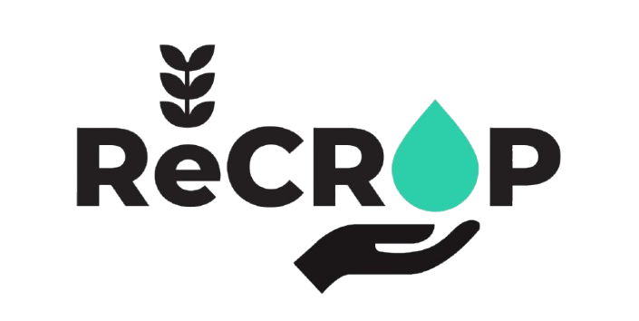
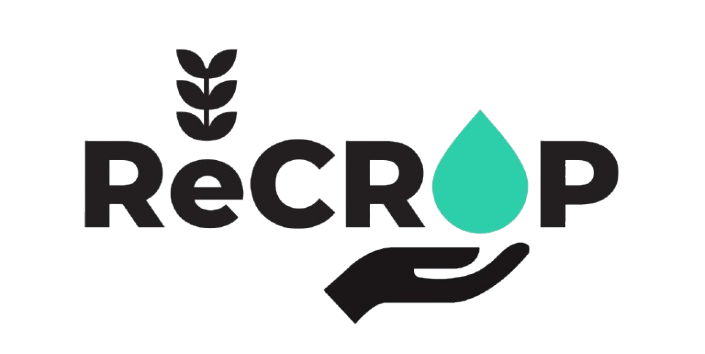
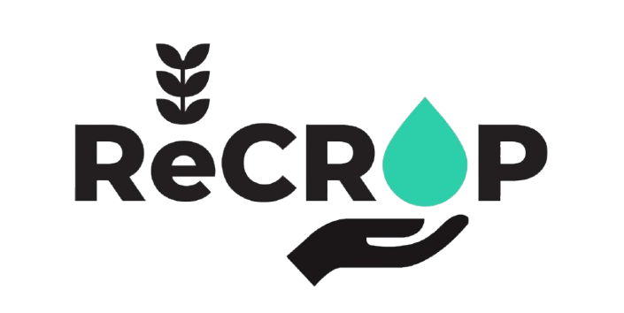
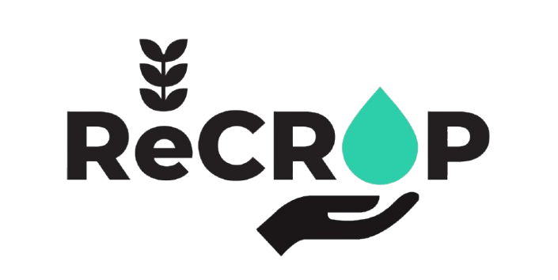
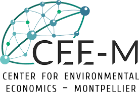
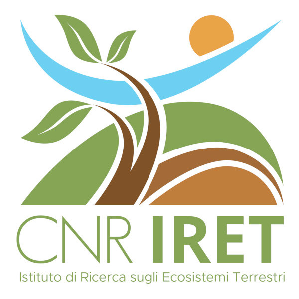
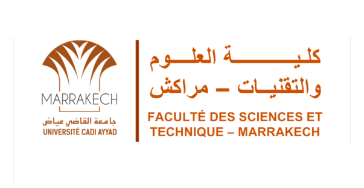
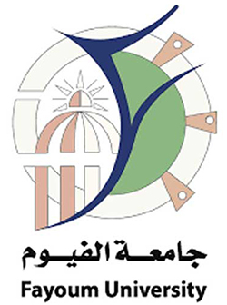
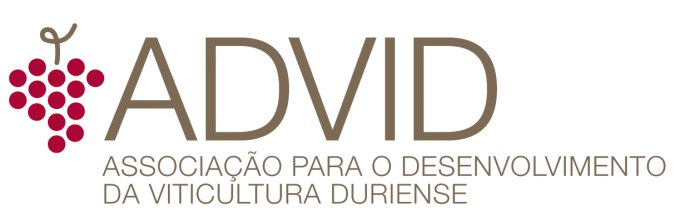

ReCROP
Bioinocula and CROPping systems: an integrated biotechnological approach for improving crop yield, biodiversity and REsilience of Mediterranean agro-ecosystems
 



The Mediterranean economy is highly dependent on agriculture. However, agricultural sustainability and productivity in this region are under serious threat due to climate change and depletion of water resources. This is worsened by poor management practices, such as the overuse of chemical fertilizers and pesticides, overgrazing, and monoculture farming. ReCROP aims to redesign Mediterranean agrosystems with improved resilience capacity and higher productivity, focusing on the development of sustainable agricultural production systems through the combined use of biotechnological tools and environmentally friendly agronomic practices. This will allow farming systems to face climate change trough the improvement of below and aboveground biodiversity, fertility, and water conservation. RECROP uses the novel approach of plant-microorganism management that relies on the increase of soils functions and health by using bioinocula, amendments, cropping systems, and climate-ready crops, to increase crop yields while providing ecological services, e.g., increasing carbon sequestration, organic matter, nutrient cycling and water conservation.
ReCROP covers the Mediterranean Geographical Area (MGA), involving Morroco, Egypt, Tunisia (South MGA), Italy and France (North MGA), and Portugal and Spain (West MGA), and incorporates major crops cultivated in these countries - vineyards, cereals, and aromatic/medicinal plants. ReCROP relies on a multi-actor approach by involving agricultural associations, local farmers and companies in the design of new resilient agrosystems. Agricultural practices will be tested and monitored across different edaphoclimatic conditions from experimental plots in a climatic area with Atlantic influence (N Portugal and NW Spain) to others in drier and hotter regions on the N of Africa.
ReCROP offers a new path forward for Mediterranean farming—science-based, sustainable and rooted in the needs of its people and land.
The project relies on both already established and newly set-up field sites and is organised as follows:

Figure 1. Overall project methodology, information flow and main results of ReCROP.
WP1. Project Management.
Overall coordination, management and procedures to reach the goals of ReCROP and accomplish the challenges of the call. Efficient articulation between Partners and with the EC.
WP2. Identification of barriers and opportunities for improved adoption of solution by farmers.
ReCROP will build a Participatory Action Research (PAR) approach to identify technical and socioeconomic barriers and opportunities for the uptake of the proposed solutions and identify actions for their customised and balanced implementation, to ensure territorial development and farmers income.
WP3. Improvement of crop yields and soil health in Mediterranean agro-ecosystems.
ReCROP will establish a transnational network of demonstration field sites. Each partner identifies field sites that cover key crops.
WP4. Improvement of soil biodiversity in Mediterranean agro-systems.
Assessment of the beneficial impact of the agricultural practices applied in ReCROP on structural and functional diversity at different levels of the soil food web (macrofauna, mesofauna, microfauna).
WP5. Socio-economic-environmental assessment.
WP5 will provide an economic evaluation on environmental services provision to farmers, to assess how farmer would receive payments by public authorities in exchange for the adoption of greener practices through Payments for Environmental Services.
WP6. Communication, dissemination, and exploitation (UCP).
A Dissemination Plan will be developed to target the economic sector stakeholders (e.g. farmers, service providers), sectorial policy makers, the academic community, and society to improve social perception on the different agroecosystems and its value for a sustainable development. Partners will exploit regional, transnational and international networks and clusters where they.
Stay up to date with the latest developments of the ReCROP project. All news and updates are shared regularly on our official platforms:
Get to know our institutional partners and our ReCrop team!

Contact: Paula Castro
Email: plcastro@ucp.pt
Country: Portugal
Partner 1
Contact: Carlos Garbisu
Email: cgarbisu@neiker.eus
Country: Spain
Partner 2
Contact: Jérôme Cortet
Email: jerome.cortet@univ-montp3.fr
Country: France
Partner 3
Contact: Sébastien Roussel
Email: sebastien.roussel@univ-montp3.fr
Country: France
Partner 4

Contact: Ángeles Prieto Fernández
Email: apf@iiag.cesga.es
Country: Spain
Partner 5
Contact: Luigi P. D'Acqui
Email: luigipaolo.dacqui@cnr.it
Country: Italy
Partner 6
Contact: Ali Boularbah
Email: a.boularbah@uca.ac.ma
Country: Morocco
Partner 7
Contact: Mahmoud M. Shendi
Email: mmshendi@fayoum.edu.eg
Country: Egypt
Partner 8
Contact: Cristina Carlos
Email: cristina.carlos@advid.pt
Country: Portugal
Partner 9

Contact: Rosário Alves
Email: info@forestis.pt
Country: Portugal
Partner 10

Contact: Taoufik Bettaieb
Email: tbettaieb@yahoo.fr
Country: Tunisia
Have doubts? Need some info? Contact us!
Universidade Católica Portuguesa - Escola Superior de Biotecnologia (UCP-ESB)
Rua de Diogo Botelho 1327
4169-005 Porto
E-mail: esb@ucp.pt
Tel: +351 22 558 0001